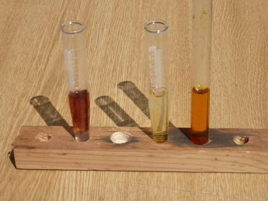

Che domanda! Ovvio che lo contengono, lo sanno anche i bimbi.
E allora perchè questo titolo abbastanza stupidino?
Perchè nonostante la semplicità del caso non avevo mai effettuato il saggio analitico di Denigès per i citrati, che per un chimico sperimentale vecchia scuola è una bella mancanza!
Corro subito ai ripari... quindi di corsa a cercare un limone e qualcos'altro che serve!
Il professor Georges Denigès è stato anch'egli un classico rappresentante di quella bella chimica sperimentale ottocentesca, della quale questo modesto blog ha riproposto tanti esempi corredati spesso dalla esecuzione pratica di "vecchi" metodi analitici.
Un esauriente articolo di Guy Devaux (per la Société d'histoire de la pharmacie, Paris 2002, LINK) racconta per esteso tutta l'opera chimica di Denigès e termina con la seguente frase, alla quale mi associo come sempre faccio quando riproduco per gioco vecchi lavori di scienziati oggi spesso dimenticati:
-"...Georges Denigès... Que sa memoire demeure toujours prèservée de l'herbe de l'oubli"-
Ecco perchè, in onore del vecchio Georges, ho cercato, si fa per dire, l'acido citrico nei limoni.
Materiale occorrente (e qui mi vi viene in aiuto l'insostituibile Treadwell):
- Ossido di mercurio
- Acido solforico
- Permanganato di potassio
- Cloruro di sodio
- Cloruro ferrico
Il reattivo di Denigès si prepara sciogliendo 5 g di HgO in una miscela di 100 ml di acqua e 20 ml di H2SO4 concentrato; in pratica ne deriva una soluzione acida di solfato mercurico HgSO4.
E' sottinteso che, rispettando le proporzioni, ho preparato nel mio caso una minima quantità di reattivo, sufficiente per condurre un paio di test.
La prova è stata fatta diluendo 1:3 del succo di limone e filtrando per ottenere una soluzione limpida.
Si tratta la soluzione citrica (qualche ml) con un ventesimo del suo volume del reattivo di Denigès, si scalda all'ebollizione e si aggiungono 5-6 gocce di KMnO4 N/10.
Il permanganato si decolora e si ottiene subito un precipitato bianco cristallino combinazione tra il solfato mercurico ed il sale di questo metallo con l'acido acetondicarbossilico, di formula HCOO-CH2-CO-CH2-COOH
Nell'immagine qui sotto si vede a destra la soluzione citrica dopo la procedura appena descritta; a sinistra per contrasto la soluzione di permanganato.

In casi come questo di piccole quantità di sostanza è molto conveniente separare per centrifugazione il precipitato anzichè perderne gran parte sul filtro.
Procedendo con il metodo descritto dal Treadwell, si tratta il precipitato con una soluzione di cloruro di sodio, nella quale si scioglie perfettamente con formazione di HgCl2 e acido acetondicarbossilico, il quale, come gli altri composti chetonici o fenolici, si colora in rossastro in presenza di cloruro ferrico.

L'immagine mostra a destra la soluzione ferrica, al centro la prova in bianco con tre gocce di FeCl3 e a sinistra la colorazione rossa indice della presenza di quell'acido acetondicarbossilico formatosi per ossidazione dal citrico.
La reazione di Denigès pur non essendo specifica è molto sensibile, riuscendo positiva fino ad una concentrazione di 500 mg/l di acido citrico.
E l'altra reazione classica per i citrati, con la formazione di pentabromoacetone?
Beh, l'onore al farmacista svedese L.Stahre l'ho già reso, facendo e descrivendo la sua reazione una decina di anni fa in uno dei primi post, il n.14-